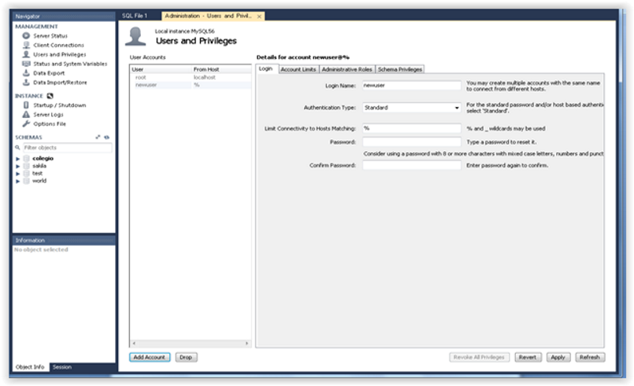

UD1 - Actividad 3 - Enunciado
Pulsa aquí para visualizar: UD1 - Actividad 3 - Enunciado
UF2215. UD1. Actividad 3. Caso práctico: Sistemas de gestión de BD con MySQL
Enunciado (Descripción)
Visualiza la siguiente imagen referente a cómo acceder a un SGBD MySQL remotamente:
Supongamos que tenemos dos PCs:
· PC Servidor MySQL con IP = 10.0.0.4
· PC Cliente con IP = 10.0.0.9
La idea es configurar MySQL (en PC Servidor) para que acepte la dirección remota con IP 10.0.0.9
Preguntas / Actividades a realizar
Pregunta A. Instala y ejecuta la herramienta gráfica MySQL Workbench (en el PC Servidor) para configurar la dirección remota con IP 10.0.0.9
Pregunta B. A la hora de realizar las consultas para nuestra base de datos ¿Qué problemas nos podemos encontrar?
Pregunta C. ¿Cómo podemos influir en el plan de ejecución de las consultas?
Pregunta D. ¿De qué herramientas dispone el SGBD MySQL para poder llevar a cabo nuestras tareas administrativas? ¿Cuáles son los principales apartados para la gestión y administración en MySQL?